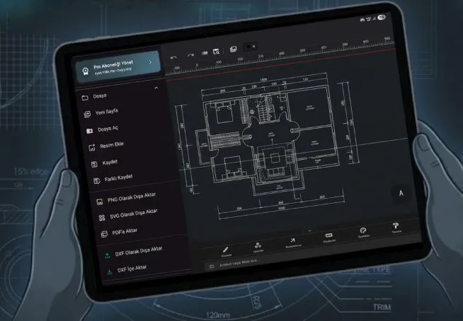

2D CAD Yazılımı ve Teknik Çizim Programı
TamgamCAD deneyimini ister masaüstünde, ister mobilde hareket halindeyken özgürce kullanın.

Hassas Çizim
TTamgamCAD, akıllı hizalama ve ızgara altyapısıyla hassas çizimler oluşturmanıza yardımcı olur. Sektör standardı düzenleme komutlarını kullanarak projelerinizi kusursuz bir şekilde tasarlamanızı sağlar.
Yerel Çalışma Alanı
Fikri mülkiyetinize değer veriyoruz. Çizim dosyalarınız ve projeleriniz, harici bulut senkronizasyonunu tercih etmediğiniz sürece doğrudan cihazınızda yerel olarak saklanır. Tamamen kontrol sizde.
Evrensel Formatlarda Dışa Aktarım
Ölçülendirme ve özel semboller içeren teknik çizimlerinizi yüksek çözünürlüklü DXF, PDF, SVG ve PNG formatlarında dışa aktarır. 2D CAD projelerinizi profesyonel sunumlar ve detaylı baskılar için vektör kalitesiyle kolayca paylaşmanızı sağlar.
Dokunmatik ve Kalem Desteği
TamgamCAD, dokunmatik ekranlar ve tabletler için optimize edilmiştir. Tuvali iki parmağınızla yakınlaştırıp kaydırabilir veya kaleminizle doğrudan ekranda milimetre hassasiyetinde çizimler yapabilirsiniz.
İş Modelinize Uygun TamgamCAD'i Deneyin
Masaüstü Sürümü
Windows 10 ve 11 cihazlarınızda geniş ekran, klavye kısayolları ve yüksek performans ile karmaşık CAD projelerine hakim olun.
Masaüstü sürümümüz temel araçları içerir.

Mobil Sürüm
Dokunmatik ekranlar için özel olarak tasarlanan kullanıcı dostu arayüzü ile profesyonel 2D CAD gücünü her yere taşıyın.
Harici klavye kullanarak klavye kısayollarını kullanabilirsiniz.
Mobil sürüm, tüm gelişmiş özellikleri ile TamgamCAD’in en güçlü versiyonudur.
TamgamCAD 2D CAD Yazılımı ile Tasarımın Gücünü Hisset
TamgamCAD, teknik çizim için özel olarak geliştirilmiş yüksek performanslı 2 boyutlu bilgisayar destekli tasarım (CAD) yazılımıdır. 2D CAD yazılımı, mühendislik ve mimari gibi alanlarda iki boyutlu hassas teknik çizim ile tasarımlar yapıp kat planları oluşturmayı olanak sağlayan vektörel tabanlı bir yazılımdır. TamgamCAD 2D CAD programı sade tasarımı ve kullanıcı dostu arayüzü ile verimli çalışma alanı sunar. Program içi yönlendirmeler ve kolay kullanım kılavuzu sayesinde ilk 2d çiziminizi hızlı bir şekilde oluşturabilirsiniz. TamgamCAD, mimarlar, mühendisler, teknikerler ve tasarım alanında faaliyet gösteren profesyonel veya yeni başlayan kişiler için pratik çözümler sunar. Hızlı ve yüksek performanslı TamgamCAD yazılımını ücretsiz denemek için sürümleri inceleyebilirsiniz.
Kapsamlı ve Hızlı 2D CAD Teknik Çizim İmkanları
2D teknik çizim veya resimlerinizi TamgamCAD’in gelişmiş araçları ile hızlı bir şekilde detaylandırabilirsiniz. Çizimlerinizin rengini, kalınlığını ve çizgi tipini özellikler bölümümden belirleyebilir daha sonra stillerini değiştirebilir veya başka bir nesneye aktarabilirsiniz. Tarama seçenekleri sayesinde detaylı teknik resim çizebilir, hassas ölçüm araçları ile çizimlerinizin gerçek hayattaki karşılığını öğrenebilirsiniz. Özelleştirdiğiniz ve detaylandırdığınız çizimleri daha sonra da kullanmak için blok oluşturma ile kütüphaneye hızlı bir şekilde ekleyebilirsiniz. Oluşturulan bloğu farklı katmanlarda kullanmak için proje kütüphanesini başka projelerde kullanmak için ise global kütüphanesini kullanabilirsiniz. Blok ayarları ve diğer çizim araçları hakkında daha fazla ayrıntı için kullanım kılavuzuna göz atabilirsiniz. TamgamCAD, kullanıcılara teknik çizim/resim için gereken temel özellikleri sunarken hız ve kullanılabilirliği de ön planda tutar. En temel CAD araçlarından biri olan katman yönetimi, çizimdeki nesneleri kullanıcının belirlediği özelliklere göre organize etmesini ve yönetmesini sağlar. Karmaşık mühendislik ve mimari çizim için önemli olan bu özellik ile verimlilik artar ve projenin düzenli bir şekilde büyümesini sağlar.
* Bazı özellikler kullanılan platforma göre farklılık gösterebilir. Özellik listesi ve karşılaştırma için özellik tablosunu inceleyebilirsiniz.
Neden TamgamCAD 2D Çizim Programını Seçmelisiniz?
TamgamCAD, mobil cihazlar için optimize edilmiş güçlü ve kullanıcı dostu arayüzüyle öne çıkan yeni nesil bir 2D CAD programı olarak, profesyonel çizim deneyimini herkes için erişilebilir hale getirir. İster sahada olun ister ofis dışında, projelerinizi dilediğiniz an oluşturabilir, düzenleyebilir ve paylaşabilirsiniz. Mobil Pro sürüm, klasik bir mobil CAD uygulamasının ötesine geçerek gelişmiş Boolean işlemleri, sınırsız katman yönetimi, hassas çizim araçları ve DXF/PDF dışa aktarma desteği sunar. Bu sayede sadece DXF görüntüleme değil, tam anlamıyla profesyonel üretim yapabilirsiniz. TamgamCAD’i hemen ücretsiz indirerek 2D CAD dünyasına hızlı bir adım atabilirsiniz. Mobil sürümde uygulama içi satın alma ile Pro özellikleri kullanabilir, masaüstü Beta sürümünü ise erken erişim süresince ücretsiz kullanabilirsiniz. İhtiyacınıza en uygun sürümü şimdi keşfedin, doğru 2D CAD programı ile tasarımlarınızı hızlandırın ve projelerinizi profesyonel seviyeye taşıyın.
Hayalindeki tasarımı profesyonel deneyim ile çizmeye başla.
Hemen ücretsiz indirin ve çizmeye başlayınTamgamCAD Çizim Araçları ve Özellikleri Nelerdir?
| Özellikler | Masaüstü | Mobil |
|---|---|---|
| Dosya Dışa Aktarım | PNG / SVG | PNG / SVG / PDF / DXF |
| Çizim Araçları | Temel Çizim Araçları | Gelişmiş Çizim Araçları |
| Tarama (Hatch) | Temel Tarama Seçenekleri | Geniş Desen Kütüphanesi |
| Düzenleme (Modifikasyon) | Trim, Rotate, Mirror, Scale, Lengthen | Temel + Extend, Offset, Array, Chamfer, Fillet |
| Gelişmiş İşlemler & Boolean | Group / Ungroup, Join, Split | Temel + Block, Wrap, Boolean |
| Notlandırma | Düz Metin, Oklu Metin | Temel + Tablo Oluşturma |
| Nesne Özellikleri | Renk, Kalınlık, Çizgi Tipi | Temel + Özellik Eşleştirme (Match Prop) |
| Proje Kütüphanesi | ❌ | ✔️ |
| Katman (Layer) Yönetimi | Sınırlı | Sınırsız |
| Komut Satırı | ✔️ | ✔️ |
TamgamCAD, temel ve gelişmiş çizim araçları ile 2 boyutlu teknik çizimler yapmanıza yardımcı olur. Düz çizgi, devamlı çizgi, daire, elips, yay ve dikdörtgen temel çizim araçları içinde yer alırken, çokgen, halka, TTR ve teğet çizgisi gelişmiş çizim araçları arasında yer alır. Bunların dışında vektörel tabanlı serbest çizim araçları ve farklı fırça tipleri ile çizimlere detay vermeyi sağlayan geniş bir araç seti sunar. Çizim sırasında pratiklik oldukça önemlidir bunun için düzenle ve işlemler bölümünde yer alan araçlar kullanıcıya hız kazandırır.
Düzenleme Bölümü Araçları
- Kırp (Trim) & Uzat (Extend): Kesişen çizgilerin fazlalıklarını budamak veya bir çizginin ucunu başka bir objeye kadar uzatmak için kullanılır.
- Ötele (Offset): Seçili bir objenin (örneğin bir duvar çizgisinin) belirlenen mesafe kadar dışına veya içine paralel kopyasını oluşturur.
- Döndür (Rotate): Seçili nesneleri belirlenen bir merkez noktası etrafında girilen açı değeri kadar döndürülmesini sağlar.
- Aynala (Mirror): Seçilen nesnelerin, belirlenen referans çizgisi etrafında ayna görüntüsünü oluşturur.
- Ölçekle (Scale): Nesneleri başlangıç noktası referans alınarak orantılı bir şekilde büyütmek veya küçültmek için kullanılır.
- Çoğalt (Array): Seçili bir objeyi yatay ve dikey düzlemde (Dikdörtgensel) veya dairesel bir merkez etrafında (Kutupsal) belirli aralıklarla ve sayılarda çoğaltır.
- Pah Kır (Chamfer) & Köşe Yuvarla (Fillet): Kesişen iki çizginin oluşturduğu keskin köşeleri belirli bir mesafe girerek düz keser (Pah) veya belirli bir yarıçapla yumuşak bir kavis oluşturur (Fillet).
- Yeniden Boyutlandır (Resize): Çizilen nesnelerin boyutlarını sonradan değiştirmek için kullanılır.
İşlemler Bölümü Araçları
- Grupla (Group) & Grubu Çöz (Ungroup): Birden fazla nesneyi seçip anlık olarak tek bir nesne gibi hareket ettirmek için grupla veya mevcut bir grubun bileşenlerini tekrar bağımsız hale getirmek için grubu çöz kullanılabilir.
- Parçala (Explode) & Uç Uca Ekle (Join):Bütün bir çoklu çizgiyi (Polyline) veya çokgeni bağımsız çizgilere ayırmak için parçala veya ucu açık, birbirine değen bağımsız çizgileri tek bir nesne olarak birleştirme için kullanılır.
- Dış Zarf Birleştir (Wrap / Boundary): Nesnelerin iç detaylarını silip sadece en dış sınırlarını baz alarak yeni, tek parça ve kapalı bir çevre geometrisi oluşturur.
- Boolean İşlemleri: Üst üste binen kapalı şekilleri matematiksel olarak işler.
- Birleştir (Union): Üst üste binen şekilleri eriterek tek bir bütün haline getirir.
- Çıkar (Difference): Ana şeklin içinden, ikinci şeklin değdiği veya kesiştiği alanları kesip atar.
- Kesişim (Intersection): Sadece şekillerin üst üste bindiği ortak (kesişen) alanı bırakır, gerisini siler.
- Sadece Farklar (Exclusion / XOR): Kesişim işleminin tam tersidir yalnızca şekillerin birbirine değmeyen farklı kısımlarını bırakıp ortak alanı siler.
Sıkça Sorulan Sorular (SSS)
TamgamCAD'i kullanmak için internet bağlantısı şart mı?
Hayır, internet bağlantısı zorunlu değildir. TamgamCAD, yerel çalışma alanı özelliği sayesinde tüm proje ve çizimlerinizi cihazınızda saklar ve tamamen çevrimdışı çalışmanıza olanak tanır.
Google Play'de satın aldığım pro özellikleri Microsoft Store'da kullanabilir miyim?
Hayır, yazılımın özellikleri yayınladığı platforma göre değişkenlik gösterir. Satın aldığınız abonelik ile gelen özellikler diğer platformda sunulmuyorsa o özelliği kullanamazsınız. Ancak aynı e-posta adresi ile giriş yapabilirsiniz.
Tablet ve dokunmatik ekranlarda kullanımı kolay mı?
Kesinlikle! Arayüzümüz dokunmatik ekranlar için özel olarak optimize edilmiştir. İki parmağınızla yakınlaştırma/kaydırma yapabilir ve dokunmatik kaleminizle milimetre hassasiyetinde çizimler oluşturabilirsiniz.
Eğitim veya deneme sürümü mevcut mu?
Evet, programı test edebilmeniz için tüm özelliklerin açık olduğu seçilen aboneliğe göre 7 veya 14 günlük ücretsiz bir deneme sürümü sunuyoruz. Google Play üzerinden indirip hemen deneyebilirsiniz. Karmaşık eğitim süreçlerine ihtiyaç duymadan uygulama içi yönlendirmeler ile yazılımı kolayca kullanabilirsiniz.
Bizimle İletişime Geçin
Öneri ve teknik destek talebi için bize yazın.
İletişim Bilgileri
E-Posta: tamgamcad@hotmail.com
Not: Teknik destek taleplerinizin daha hızlı çözülebilmesi için lütfen Pro lisans kaydınızın bulunduğu e-posta adresinizi kullanın.